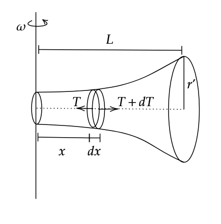

As in the figure, each part moves in a circle with corresponding radius \(x\), and each part has tensile forces \(T\) and \(T+dT\) acting on both sides respectively. We shall first find the tension \(T\) as function of the distance from the axis \(x\). Then, we shall use this to find elongation as in the previous question.

Since mass can’t be constant throughout, let us assume a constant volume mass density \(\rho\). We have, \[A = \pi r^2 = \pi e^{2x}\]
Balancing forces,
\[F = mR\omega^2\]
\[-dT = (\rho \pi e^{2x} dx)(x)(\omega^2)\]
\[\implies T = -\rho \pi \omega^2 \int_{L}^{x} x e^{2x} dx\]
\[T = -\rho \pi \omega^2 \left( \frac{x e^{2x}}{2} - \frac{e^{2x}}{4} \right) \Biggr|_{L}^{x}\]
\[T= \frac{\rho \pi \omega^2}{4} \left( 2(L e^{2L} - x e^{2x}) + e^{2x} - e^{2L} \right)\tag1\]
Now, we have,
\[dl = \frac{T dx}{\pi e^{2x} Y}\]
Substituting (1),
\[\implies \Delta L = \frac{\rho \pi \omega^2}{4 \pi Y} \int_{0}^{L} 2(L e^{2L - 2x} - x) + 1 - e^{2L-2x} dx\]
On simplification,
\[\therefore \Delta L = \frac{\rho \omega^2}{4 Y} \left( 1 - L \right) \left( 1 + L - e^{2L} \right)\]